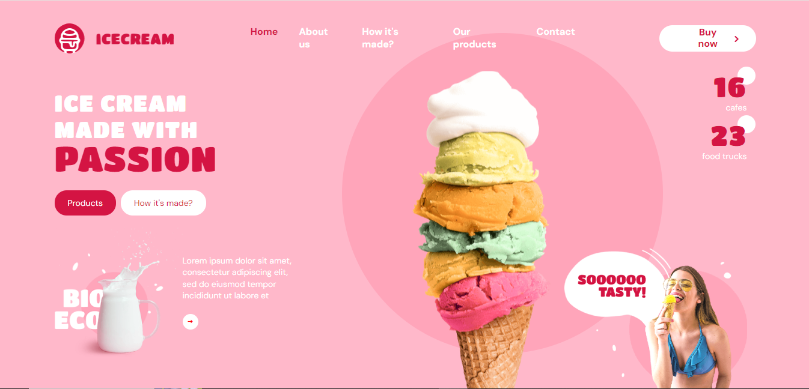
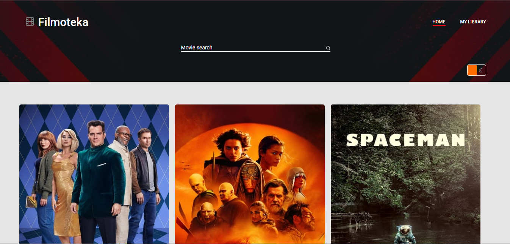
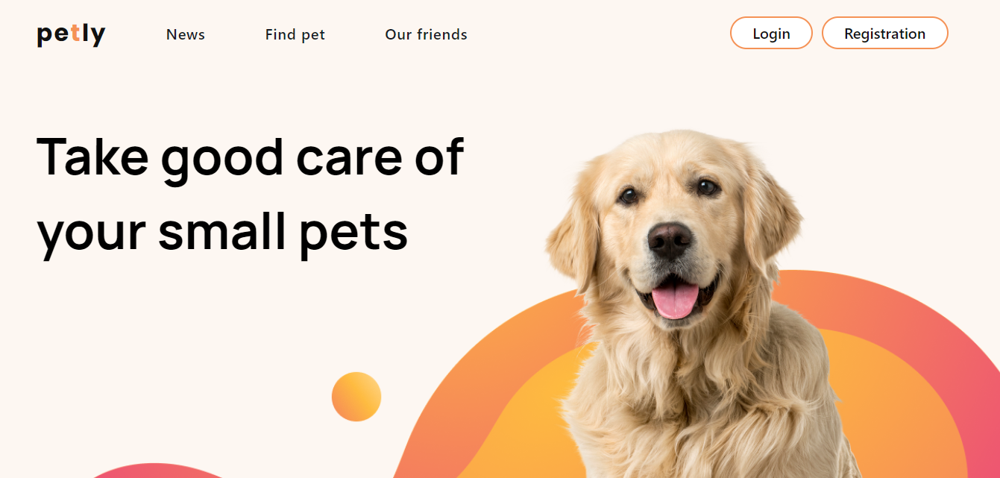

Maksym Chuikov
about
Hi there! I'm a Maksim Chuikov, front end developer based on Kharkov. I'm looking for my first job.
Last year i have ended full-stack courses. I have experience in realization individual and team projects, that you can see in section below. Now i keep studying on my own, and progresinng in english too.
I am ready to work, get the necessary practice and experience to become a true professional. I am looking for a reliable company that values its employees in any life circumstances, ready to grow its stars for long-term cooperation. If you are such a company and I to be with you, then you will get a reliable person.
Random facts:
Jedi in cards games
Love Rock, trance and relaxy music
body's doctor
i belive in human design
like to have a fun time
Love hfwpg
Coldy to cars
Portfolio
Team projects
-
Ice-cream
Educational group project after html\css course. The ice-cream company's website, with an order form, product details and a map of sales outlets. The website with a responsive layout. I created a section products, and animation for it.
-
Filmoteca
Educational group project after javascript course. A film search site with the ability to read information about the films, watch a trailer and add films to the library. I created functionality for obtaining movie data from the API, drawing their cards and drawing in a modal window.
-
Petly Services
Educational group project after react\node course. The application of the service of announcements for the adaptation of pets and related news and partners. Has a personal user profile with the ability to keep a history of your pet. I created a find-pet page, also functional for this page with team-lead.
Individual projects
-
Phonebook
-
Search movies
-
Web-stuidio
-
React Native Project
Educational project as part of the react-native additional course. Details, and how open this app - you can see at the link below in «readmy».
GITHUB -
Find your favorite cats
At this project i repeated some had learned moments earlier, tryed to figure out in new libraries and other things. It hasn't ended yet. Later will be backend here too.
-
Rock stars singers
The test task, and at current version uses type script. Details you can see at the link below in «readmy»